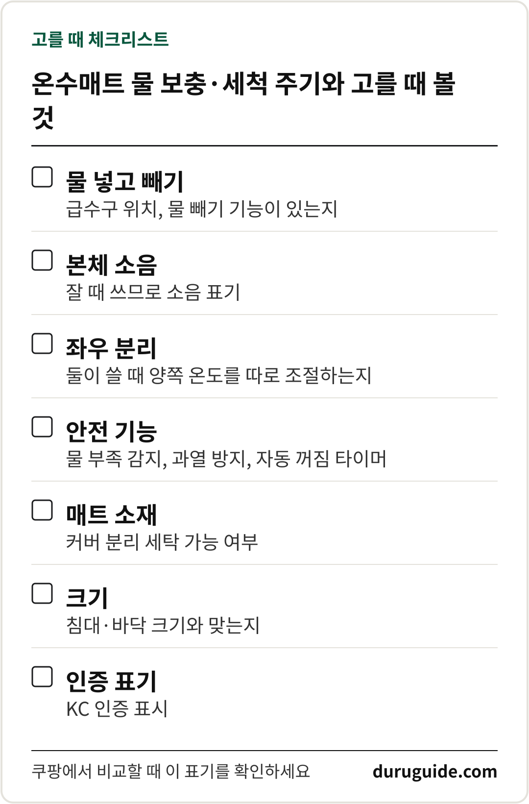

온수매트 물 보충·세척 주기와 고를 때 볼 것
이런 상황이죠
작년에 넣어 둔 온수매트를 꺼냈더니 물 부족 표시가 뜨고, 본체에서 꾸르륵 소리가 나요. 매트 한쪽이 덜 따뜻하거나 물에서 냄새가 나는 것 같기도 해요. 물은 얼마나 자주 갈아야 하는지, 아예 새로 사야 하는지 헷갈리지요.
왜 생기나
온수매트는 본체에서 물을 데워 매트 속 호스로 돌리는 구조예요. 그래서 관리할 곳이 세 군데예요.
- 물 — 쓰다 보면 조금씩 줄고, 오래 고여 있으면 냄새나 물때가 생길 수 있어요.
- 호스 — 접히거나 눌리면 물이 잘 돌지 않아 일부만 따뜻해져요. 공기가 들어가도 소리가 나고 순환이 약해져요.
- 본체 — 펌프와 히터가 들어 있어 소음과 고장이 여기서 많이 생겨요.
사기 전에 먼저 해볼 것
- 물 보충은 설명서대로 해요. 어떤 물을 쓸지, 수위를 어디까지 맞출지는 제품마다 달라요. 첨가제는 제조사가 안내한 것만 쓰세요.
- 공기를 빼요. 매트를 평평하게 펴고 설명서에 나온 본체 위치와 공기 빼기 방법을 따라 해 보세요. 꾸르륵 소리가 줄어드는 경우가 많아요.
- 호스 꺾임을 확인해요. 매트 위에 무거운 가구가 올라가 있거나 접힌 곳이 없는지 보세요.
-
물을 갈아요. 시즌을 시작할 때와 끝낼 때 물을 빼고 새로 채우는 것을 기본으로 하고, 더 자주 갈라는 안내가 있으면 따르세요.
-
매트 커버를 빨아요. 커버가 분리되는 제품은 세탁 표시를 보고 빨고, 호스가 든 속 매트는 물세탁이 되는지 먼저 확인하세요.
이렇게 해도 본체에서 물이 새거나 전원이 자주 꺼지면 제조사 점검을 받거나 교체를 생각하세요.
고를 때 체크리스트
| 확인 항목 | 보는 기준 |
|---|---|
| 물 넣고 빼기 | 급수구 위치, 물 빼기 기능이 있는지 |
| 본체 소음 | 잘 때 쓰므로 소음 표기 |
| 좌우 분리 | 둘이 쓸 때 양쪽 온도를 따로 조절하는지 |
| 안전 기능 | 물 부족 감지, 과열 방지, 자동 꺼짐 타이머 |
| 매트 소재 | 커버 분리 세탁 가능 여부 |
| 크기 | 침대·바닥 크기와 맞는지 |
| 인증 표기 | KC 인증 표시 |
이런 분께는 맞지 않아요
- 물 보충과 보관 전 물 빼기를 번거로워한다면 전기매트가 더 편할 수 있어요.
- 본체 소리에 예민해 잠을 못 이룬다면 소음 표기부터 꼼꼼히 보세요.
본체는 바닥이 평평하고 통풍이 되는 곳에 두고, 이불로 덮지 마세요. 전원선이 매트 밑에 깔리거나 문에 끼지 않게 정리해 주세요.
보관할 때
시즌이 끝나면 물을 빼고 본체와 매트를 충분히 말려 주세요. 매트는 접지 말고 둥글게 말아 호스가 꺾이지 않게 보관하세요. 물이 남은 채로 추운 곳에 두면 얼어서 상할 수 있어요.
추천 제품 찾기
먼저 쓰는 사람 수와 침대 크기, 소음에 얼마나 예민한지를 정하세요. 쿠팡에서는 물 빼기 기능, 소음 표기, 좌우 분리 난방, 물 부족 감지와 자동 꺼짐 기능을 비교해 보시면 돼요. 현재 가격은 쿠팡에서 확인해 주세요.

위 표의 표기를 비교해 보세요.
현재 가격은 쿠팡에서 확인해 주세요.
이 포스팅은 쿠팡 파트너스 활동의 일환으로, 이에 따른 일정액의 수수료를 제공받습니다.